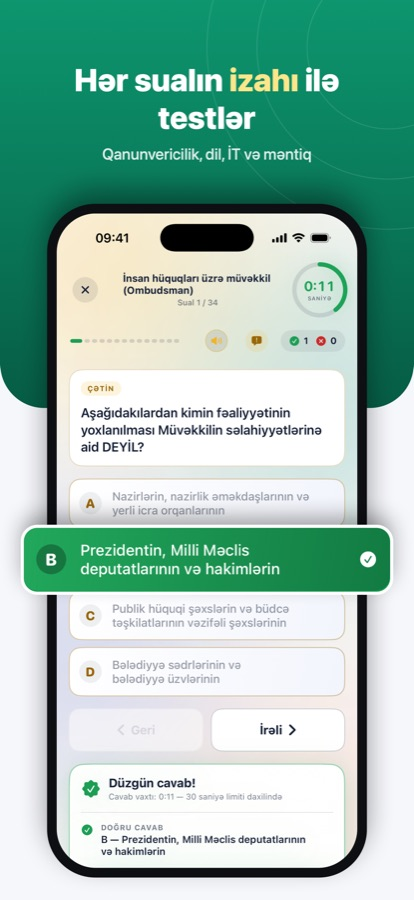
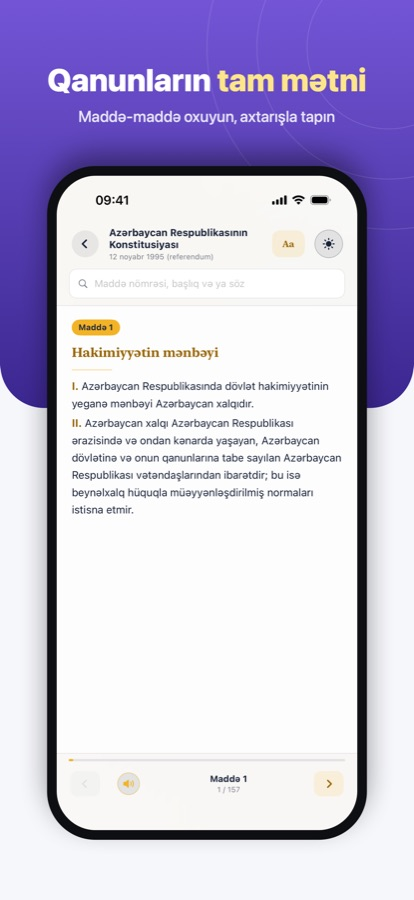
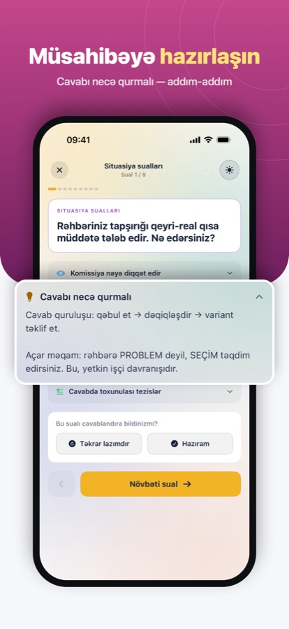

Yüksəl
Dövlət qulluğu imtahanına hazırlıqda yeni bir dövr
Testlər, qanunlar, qaydalar, müsahibə və vakansiyalar — hamısı bir tətbiqdə.




- İzahlı test suallarıQanunvericilik, Azərbaycan dili, informatika və məntiq — vəzifə qrupuna uyğun, hər sualın izahı ilə.
- İmtahan rejimiTaymerlə qarışıq imtahan, 50:50 köməyi və nəticələrin təhlili.
- Qanunların tam mətniİmtahana daxil olan qanunlar maddə-maddə, bütün sənədlərdə axtarışla.
- Qaydalar kitab kimiAzərbaycan dili, informatika və məntiq qaydaları — vərəqlə, axtar, yazı ölçüsünü seç.
- Müsahibəyə hazırlıqÖzünütəqdim sualları və cavabı necə qurmaq barədə tövsiyələr.
- Dünyagörüşü kartlarıTarix, coğrafiya, mədəniyyət, iqtisadiyyat və daha çox mövzu üzrə bilik kartları.
- Dövlət qurumları və vakansiyalarVakant vəzifələr — tələblər, maaş və sənəd qəbulu tarixləri bir yerdə.